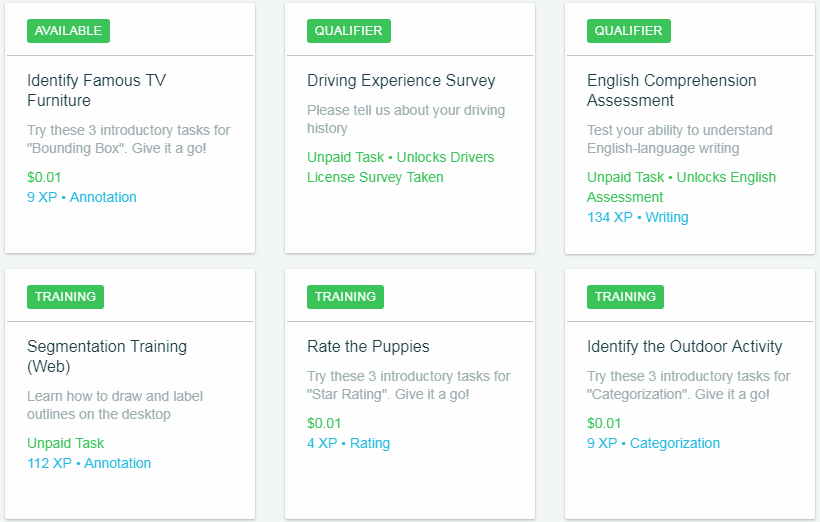
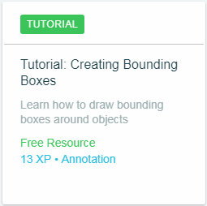
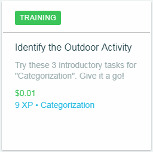
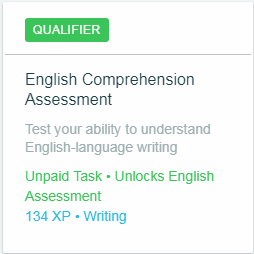
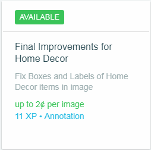

Tâches principales

Ceux que vous venez d'observer sont généralement les tâches qui vous sont confiées au début, ils vous expliquent comment exécuter certaines tâches avec des tutoriels, mais ne vous inquiétez pas pour ceux qui n'ont pas de tutoriel, quand vous commencez chaque tâche, on vous donne des instructions pour le faire aussi vous aurez de meilleures performances dans toutes vos tâches et vous serez en mesure d'obtenir de meilleurs paiements à mesure que vous acquerrez de l'expérience, en précisant qu'un pourcentage considérable de tâches sont traduites dans la langue de votre pays.
Il y a 4 types de tâches dans Spare5, puis nous expliquons en détail chacun d'entre eux:
Totoriels: Ces tâches ne sont pas rémunérées, vous pouvez les faire autant de fois que vous le souhaitez si vous voulez apprendre pour de futures tâches ou si vous avez oublié comment faire, même si elles ne sont pas payées, nous vous recommandons de les faire au début. Les tâches vous apprennent à effectuer des tâches qui, selon notre expérience, apparaissent plus fréquemment, en plus de vous donner des points d'expérience, c'est-à-dire vous aider à augmenter vos options de recevoir une tâche rémunérée. |
 |
|  | Entraînement: Ces tâches sont très similaires aux tutoriels, beaucoup d'entre eux sont payés seulement la première fois que vous les faites et certains ne sont jamais payés, mais vous pouvez les faire autant de fois que vous voulez pour améliorer vos compétences. |
Classification: Ces tâches sont nécessaires pour débloquer des tâches payantes, vous devez les exécuter avec une précision de 100% afin qu'elles soient approuvées, si vous n'approuvez pas la première tentative, ne vous inquiétez pas, vous pouvez recommencer 48 heures plus tard, va débloquer une tâche avec paiement en plus de vous donner de l'expérience aussi bien. |
 |
|  | Tâches payées: Ce sont ces tâches qui apportent de l'expérience, mais surtout, vos bénéfices de Spare5 augmentent entre 1 et 5 centimes, dans la plupart des cas, ils sont très simples et ne vous prennent pas plus de 30 secondes, ils sont généralement pendant un certain temps et disparaissent, alors soyez au courant. Lorsque vous entrez la tâche pour la première fois, ils vous donnent des instructions et ils vous disent quoi faire et comment le faire, faites attention aux instructions pour avoir un pourcentage élevé de succès et un meilleur paiement, et si vous le faites bien, vous aurez probablement ce genre de tâches à nouveau. |
D'après notre expérience, nous pouvons vous dire que plus vous accomplirez les tâches, plus vous viendrez, car votre performance dans ces tâches sera examinée par ceux qui les élèvent.